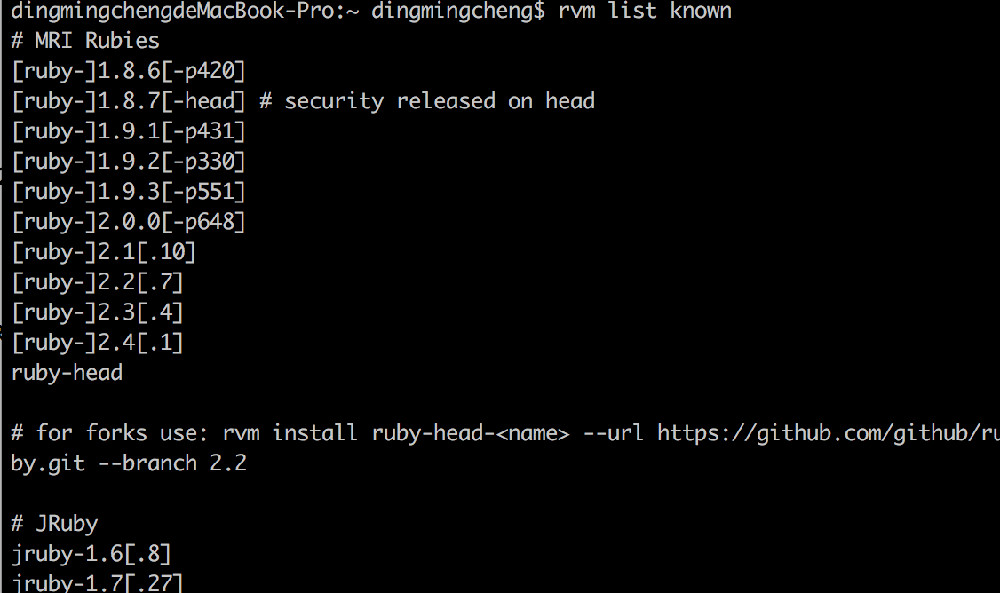
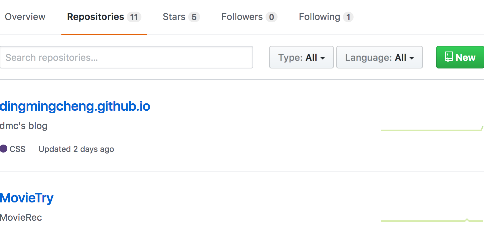
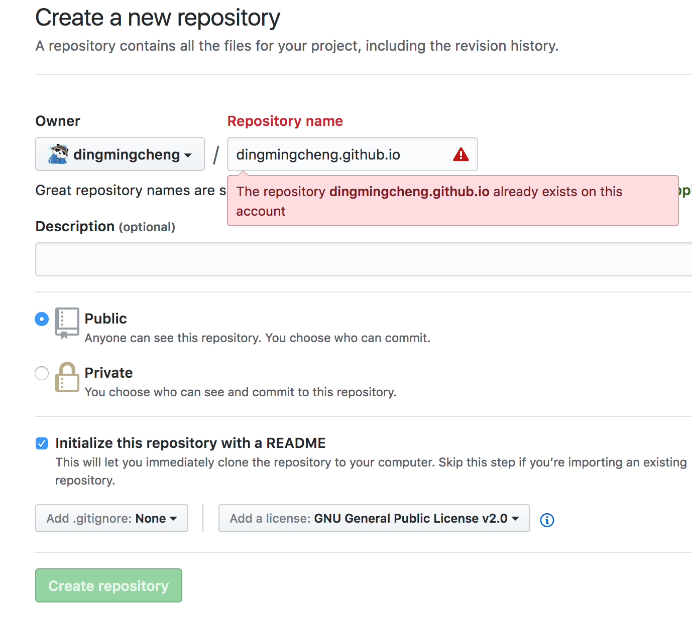
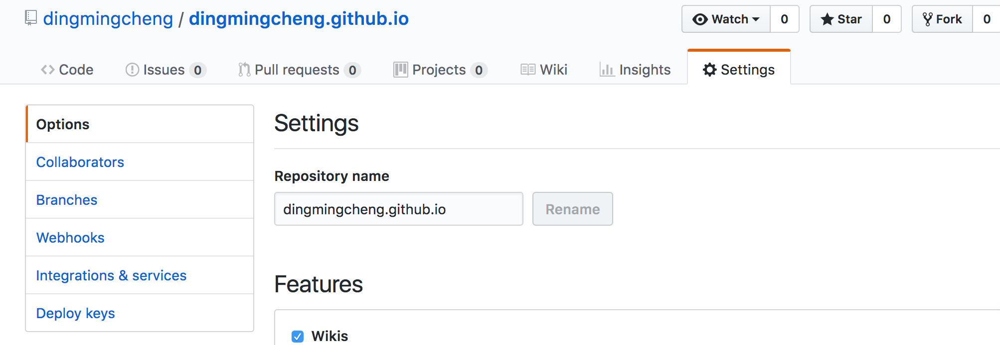
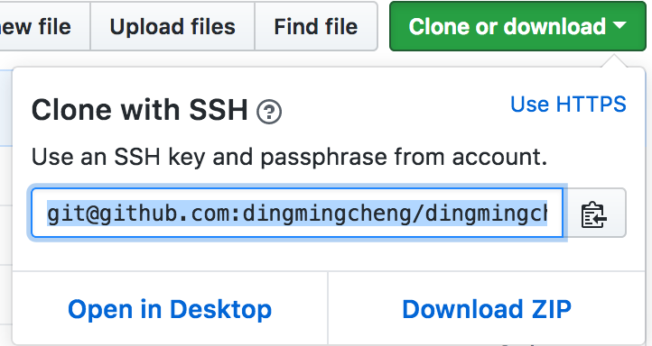

先写写我的博客的搭建教程吧，希望能帮到需要的人。
总体情况
我的博客搭建环境是在mac，主要是使用了jekyll框架搭建，之前看网上的教程都是使用hexo，自己之前也是用hexo试过，不过看到一个很不错的模版，也有一定的扩展性，于是就用了jekyll来搭建，网站部署在github上，就是加载速度有点慢…。主题模板也是使用了网上的一个模板。
环境搭建
以下的搭建是在mac环境下进行的
Ruby
首先是ruby的环境安装，mac自带ruby环境，不过自己用时发现版本过低，是要2.1以上，于是重新安装，本来电脑中有homebrew，想用homebrew安装，但不知为何，反正失败了，后面就改用rvm，具体过程如下：
rvm安装
curl -L https://get.rvm.io | bash -s stable
载入rvm环境
source ~/.rvm/scripts/rvm
版本检查
rvm -v
通过rvm安装ruby
查看可以选择的版本
rvm list known
会出现下图

接着开始安装，泡杯咖啡的时间就ok了
rvm install 2.4
确认是否安装成功
ruby -v
gem -v
jekyll
jekyll的环境安装
gem install jekyll
确认jekyll已安装
jekyll -v
bundler
bundler安装
gem install bundler
bundler查看
bundler -v
###以上用于本地环境的搭建，环境搭建好后就简单了
jekyll new my-awesome-site
cd my-awesome-site
jekyll server
窗口不能关闭，用浏览器访问localhost:4000就可以了
git 环境搭建
git主要是用与github，而github主要是因为其中的github page(你写博客总是希望发布到互联网上的吧。。。还可以顺便和非计算机专业的妹子吹个牛，岂不是美滋滋)，githubpage的介绍可以看这里，主要是充当了一个服务器，省去了很多的麻烦。
首先是github账号的注册。。。emmm跳过了
之后“https://github.com/{你注册时的username}”就是你的github主页了
github page的搭建

如上图选择Repositories,然后选择New

想关选项就类似上图吧，开源协议就填GPL协议吧

拉到下方，选择choose a theme这个按钮，跳转后点击select theme就可以，再访问https://{你的username}.github.io 你发现了什么，okay。
接着是需要生成一对秘钥，将公钥添加到github上，具体原理就不多说了，这一部分可以看我的另外一篇文章，“github初始化设置”
至此github page的页面也可用了
接着就是将你本地的博客上传到github page上了。首先是选个主题，直接去jekyll主题可以找到一个不错的主题，直接下载下来，将这些文件上传到github中那个刚刚创建的仓库就可以了。另外说一句，要更改博客相关样式需要在下载下来的文件夹的根目录下的__config.yml文件中修改，里面应该都有注释，不难。

复制其中的内容
git clone 上面复制了的内容
然后通过cd命令到该文件夹的更目录下，将之前下载下来的主题替换这之中全部的文件
git add .
git commit -m "update"
git push
等文件上传成功，这时，在安装ruby时泡的咖啡估计也冷了，可以倒了，杯子洗好再去看看你的主页
博文撰写
接下来就简单了，直接使用markdown编辑器，mac下我用的是Typora，windows下用的是markdownpad，多说一句，markdown还是一个很不错的编辑工具的，可以制作简历，写文档等等。
直接将写好的文件存入_posts中就可以了（当然别忘了jekyll server命令，将你的md文件自动转换成静态页面进行展示）。
当然别忘记了去看看下载下来的主题中自带的_posts中的文章，保证格式正确（主要是开头一些title，layout之类的）
差不多，总的来说就是这样。